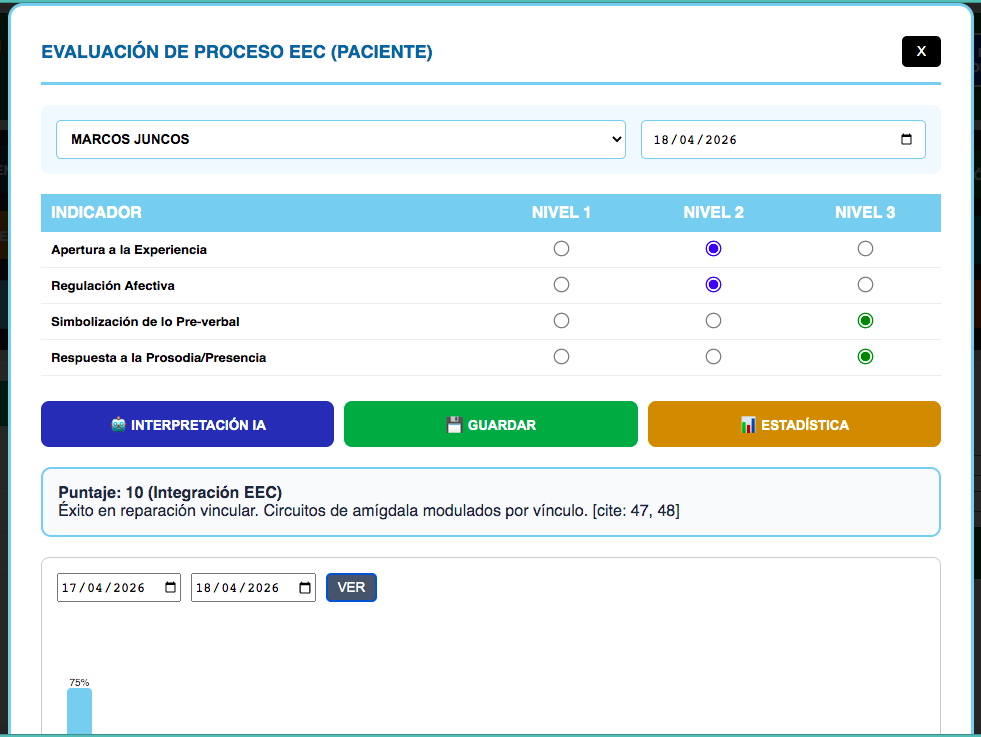
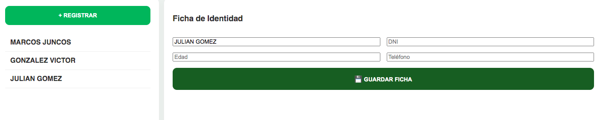

La Estación de Ingeniería Clínica
potenciada con IA
Análisis de neuroplasticidad y REPAO en una herramienta cerrada y segura.

Análisis de neuroplasticidad y REPAO en una herramienta cerrada y segura.


Lic. Graciela Rios
"Una herramienta que eleva la supervisión clínica al siguiente nivel."
Dr. RUBEN M. PEREYRA
"Ingeniería y clínica unidas para garantizar la excelencia profesional."